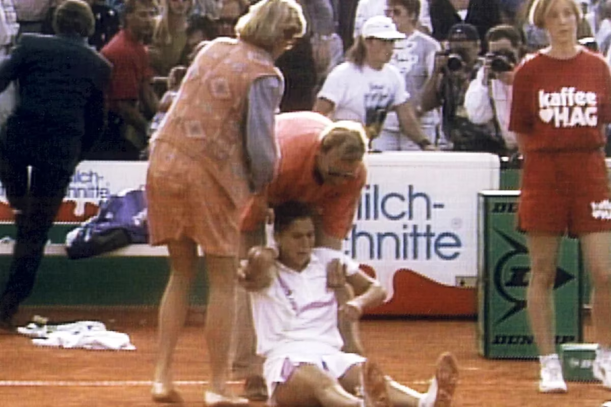

El Diario +

tu portal de noticias.
Murió Günter Parche, el hombre que apuñaló por la espalda a Monica Seles.
Falleció el demente fanático de Steffi Graf que quiso sacar de carrera a Seles atacándola, en un hecho que marcó un antes y un después en el tenis; el gran gesto de Gaby Sabatini
Un momento dramático en la historia del deporte: Mónica Seles tras ser atacada en pleno torneo de Hamburgo.
Hace casi tres décadas, el 30 de abril de 1993, el mundo del tenis se paralizó y ya nunca fue igual a partir del atentado contra Mónica Seles. Número 1 y nacida en Novi Sad, cuando todavía pertenecía a Yugoslavia, representaba mucho más que una amenaza deportiva para la alemana Steffi Graf y las aspirantes a la cima de la WTA. Aquella tarde, en Hamburgo, Seles vencía 6-4 y 4-3 a la búlgara Magdalena Maleeva, por los cuartos de final, pero a las 18.50 todo se convirtió en una película dramática: mientras bebía agua en el descanso, recibió una puñalada en el omoplato derecho por parte de Günter Parche, un demente fanático de Steffi Graf que quería sacar de carrera a Seles. En estas horas, otra vez, el mundo del tenis tuvo escalofrío al enterarse del fallecimiento de Parche.
La agresión a Seles sucedió mientras bebía agua en el descanso y se secaba el sudor con una toalla. el ataque la desorientó: se puso de pie, enseguida se acercaron a auxiliarla, empezó a desvanecerse, soltó el vaso que sostenía con la mano izquierda y se desplomó sobre el polvo de ladrillo. A pocos metros, los agentes de seguridad reducían a Parche. Se especularon cuestiones políticas [en plena guerra de Yugoslavia, la tenista había recibido amenazas por carta], pero aquel hombre tornero desempleado de la ex-Alemania comunista, había corrido hacia la baranda para agredir a Seles con un cuchillo de cocina y un objetivo: quitarla de la competencia para que su admirada Graf volviera a dominar.
Video sobre lo ocurrido. (Contenido sensible )
“Monica ha tenido suerte. Ni el pulmón ni el omoplato han sido dañados. Solo ha resultado herido un músculo. Ella todavía está en shock y permanecerá en observación”, fue el parte médico del Hospital Universitario Eppendorf de Hamburgo, donde fue trasladada Seles. “Tuve miedo de morir cuando vi a Monica gritar”, confesó, aterrada, Maleeva, por entonces 14ª. Testigos aseguraron que Parche parecía alcoholizado y que tomó el cuchillo con las dos manos en el momento en el que se lo clavó a Seles. La puñalada le penetró solo dos centímetros. Insólitamente, los organizadores de aquel torneo decidieron que la acción siguiera y Arantxa Sánchez Vicario venció a Graf en la final.
Después de dos juicios, se comprobó que Parche era psicológicamente anormal y fue sentenciado a dos años de libertad condicional y tratamiento psicológico. Estuvo en prisión solo seis meses, entre la agresión y la condena, el 13 de octubre de 1993. Después de eso, quedó libre.
Seles volvió a competir, pero no pudo despojarse de una lesión más psicológica que física. Luego de la agresión, los médicos diagnosticaron que estaría inactiva durante tres meses. Pero la jugadora nacionalizada estadounidense recién volvió a jugar en agosto de 1995. Ganó 21 títulos más, incluido el Abierto de Australia 1996, pero ya nunca volvió a disfrutar.